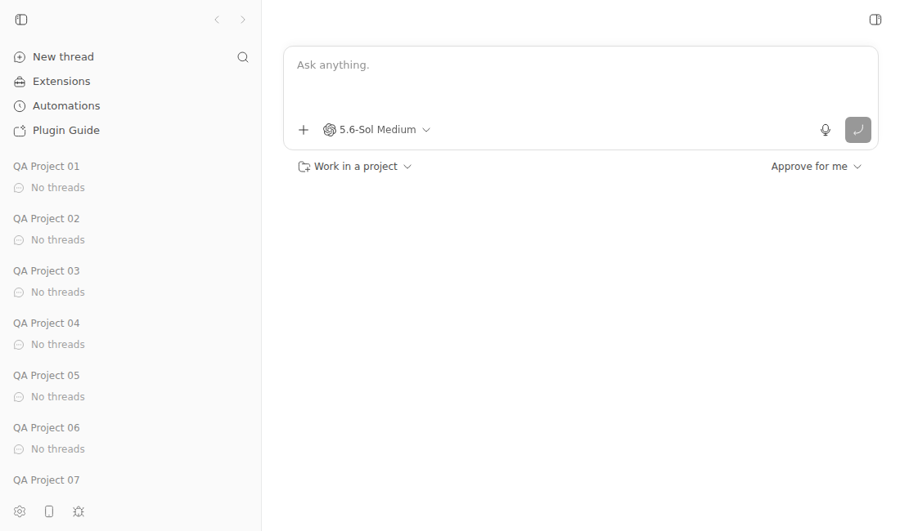
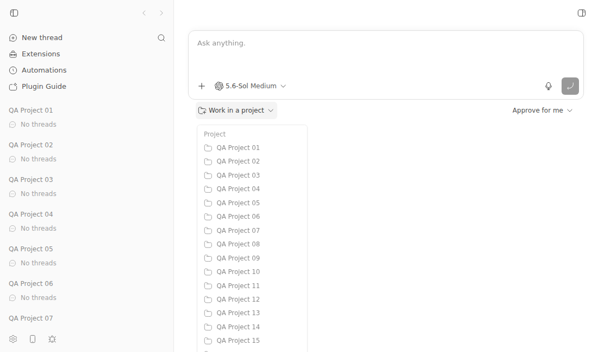
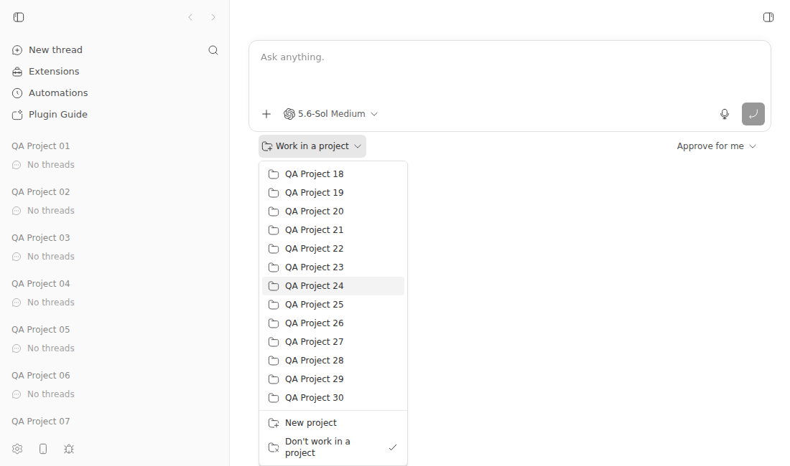

#2551 · Project picker dropdown does not scroll: projects past the window bottom are unreachable
Verdict: REPRODUCED · Root-cause confidence: high
1. TL;DR
The desktop project picker puts every project in one menu without a height limit.
With 30 projects, the menu bottom reached 1,101 px in a 650 px viewport.
The shared desktop menu hides overflow, and ProjectSelector adds no height limit or scroll behavior.
Radix supplies the correct 426 px available height, so a small local class change makes every project reachable.
2. Claims vs findings
| Claim from the issue | Status | Evidence |
|---|---|---|
| The menu runs below the window edge. | Verified | The menu bottom was 1,101 px. The viewport bottom was 650 px. |
| The menu has no scrollbar, and wheel input does not move it. | Verified | Computed overflow-y was hidden. A 700 px wheel input left scrollTop at zero. |
| Projects below the edge cannot be read or selected. | Verified | The last item occupied y=1,070–1,096 px. The menu had no scroll range. |
| A short project list fits and does not show the fault. | Verified | A measured five-project menu was 227 px high and ended at y=451 px. It fit in the 650 px viewport. |
| The exact report came from the latest macOS desktop release. | Unverified | The issue does not record a version. This check used the same app frontend on Linux Chrome. |
3. Environment
- bb commit:
ad79bbb5ec909524f8f281e62d860c588a86f332. origin/mainresolved to1d97c63ed13b5231c1051b7af7ac36661d1f65abon 2026-08-27.- No later commit changed either fault path.
- OS: Linux 7.0.0-29-generic, x86-64.
- Node: 24.18.0.
- Browser: Chrome 149.0.7827.55, headless, 1,100 × 650 CSS px.
- App:
http://localhost:14607. - Server:
http://localhost:22607. - Host daemon:
http://127.0.0.1:30607. - Data:
$HOME/.bb-dev/tmp-bb-report-2551-revise-8v8ven-7e05a6d71f72. - Providers: Codex 0.150.1, Claude Code 2.1.247, Pi 0.84.3, Cursor 2026.08.11, and Grok 1.0.5.
- No provider turn was necessary for this frontend fault.
4. Minimal reproduction
-
Check out the tested commit.
git checkout --detach ad79bbb5ec909524f8f281e62d860c588a86f332 pnpm install --frozen-lockfile --prefer-offline pnpm exec turbo run build
-
Start an isolated development instance.
scripts/bb-dev-app current eval "$(scripts/bb-dev-app env)"
-
Create 30 local project fixtures.
host_id=$(node packages/scripts/dist/commands/run-cli.js machine list --json | jq -r '.[0].id') scratch_root=$(mktemp -d /tmp/bb-2551-repro-XXXXXX) for project_num in $(seq -w 1 30); do project_path="$scratch_root/project-$project_num" mkdir -p "$project_path" git -C "$project_path" init -q curl -sS -X POST "$BB_SERVER_URL/api/v1/projects" \ -H 'content-type: application/json' \ -d "{\"name\":\"QA Project $project_num\",\"source\":{\"type\":\"local_path\",\"path\":\"$project_path\",\"hostId\":\"$host_id\"}}" \ >/dev/null done curl -sS "$BB_SERVER_URL/api/v1/projects" \ | jq '{projectCount: length, firstProject: .[0].name, lastProject: .[-1].name}'The corrected direct CLI command returned clean JSON. The fixture command completed with this output.
{ "projectCount": 30, "firstProject": "QA Project 01", "lastProject": "QA Project 30" } - Open the app URL in a 1,100 × 650 window.
- Click Work in a project.
- Move the pointer over the menu and scroll down.
Expected output
menu bottom: <= 650px overflow-y: auto scrollTop after wheel: > 0 last item bottom: <= 650px after scroll
Actual output
fixture project count: 30 viewport height: 650px available height variable: 426px menu top / bottom / height: 224px / 1101px / 877px overflow-y: hidden max-height: none scrollTop before wheel: 0 scrollTop after 700px wheel: 0 last item top / bottom: 1070px / 1096px
Short-list control
I repeated the browser measurement with five projects.
fixture project count: 5 viewport height: 650px menu top / bottom / height: 224px / 451px / 227px last item top / bottom: 420px / 446px
The short list fit inside the viewport. It did not show the reported fault.


Regression test
Save the test file as apps/app/src/components/pickers/ProjectSelector.issue2551.test.tsx.
// @vitest-environment jsdom
import { cleanup, render, screen } from "@testing-library/react";
import { afterEach, describe, expect, it } from "vitest";
import { ProjectSelector } from "./ProjectSelector";
afterEach(cleanup);
describe("ProjectSelector issue #2551 reproduction", () => {
it("caps the desktop menu to its available height and lets it scroll", () => {
const projects = Array.from({ length: 30 }, (_, index) => ({
id: `proj_${index + 1}`,
name: `QA Project ${String(index + 1).padStart(2, "0")}`,
}));
render(
<ProjectSelector
projects={projects}
value={null}
onChange={() => undefined}
allowNoProject
defaultOpen
modal={false}
/>,
);
const menu = screen.getByRole("menu");
expect(menu.className).toContain(
"max-h-[var(--radix-dropdown-menu-content-available-height)]",
);
expect(menu.className).toContain("overflow-y-auto");
});
});
Run this command from apps/app.
pnpm exec vitest run src/components/pickers/ProjectSelector.issue2551.test.tsx
The base test fails at the first class assertion. See the full base output.
5. Root cause
ProjectSelector gives the content only a width class. It then renders every project into that content.
<DropdownMenuContent align="start" side="bottom" className="w-52">
<DropdownMenuLabel>Project</DropdownMenuLabel>
{projects.map((project) => (
<DropdownMenuItem key={project.id} ...>
...
</DropdownMenuItem>
))}
See ProjectSelector.tsx lines 144–166.
The shared desktop dropdown adds overflow-hidden. It does not add a height limit or a vertical scroll region.
className={cn(
"z-50 min-w-28 overflow-hidden rounded-md border ...",
className,
)}
See dropdown-menu.tsx lines 187–213.
Radix measured 426 px of available height and set its CSS variable. No project-picker class consumes that variable.
The menu therefore keeps its full 877 px height. The window clips 451 px, and hidden overflow prevents internal movement.
The compact branch already adds overflow-y-auto inside its responsive drawer.
See the compact dropdown branch.
git blame traces the width-only project menu to commit cebef078d.
origin/main advanced past the base commit. No later commit changed either source path.
6. Proposed fix (first principles)
Give the desktop project menu a maximum height from Radix. Let the same element own vertical scroll.
<DropdownMenuContent align="start" side="bottom" className="max-h-[var(--radix-dropdown-menu-content-available-height)] w-52 overflow-y-auto overscroll-contain" >
This local change preserved the menu structure. It changed the measured menu height from 877 px to 426 px.
The same wheel input changed scrollTop from zero to 451. The final item then ended at 645 px.
The regression test passed with this change. See the passing test output.

A production change should also test the compact drawer. That test will prevent a desktop height rule from limiting the drawer.
Keep the change in the app layer. This fault does not change a server or host-daemon contract.
7. Related issues
- #2105 reported the same unbounded-list pattern in the former T3 Sidebar plugin.
- #2105 did not share this component. The project picker needs its own fix.
8. Appendix
Evidence files
- Browser metrics and proposed-fix comparison
- Failing regression test
- Base test output
- Proposed-fix test output
Commands and checks
gh issue view 2551 --comments gh issue view 2551 --json number,title,body,labels,projectItems,state,url,comments git fetch origin main git rev-parse HEAD origin/main git log ad79bbb5ec90..origin/main -- apps/app/src/components/pickers/ProjectSelector.tsx git log ad79bbb5ec90..origin/main -- packages/shared-ui/src/components/ui/dropdown-menu.tsx git blame ad79bbb5ec90 -L 141,145 -- apps/app/src/components/pickers/ProjectSelector.tsx git blame ad79bbb5ec90 -L 187,213 -- packages/shared-ui/src/components/ui/dropdown-menu.tsx rg -n "Work in a project|ProjectSelector" apps packages plugins scripts/bb-dev-app current eval "$(scripts/bb-dev-app env)" node packages/scripts/dist/commands/run-cli.js machine list --json node packages/scripts/dist/commands/run-cli.js provider list --json curl -sS "$BB_SERVER_URL/api/v1/projects" doobie --headless -b bb-report-2551 ... pnpm exec vitest run src/components/pickers/ProjectSelector.issue2551.test.tsx
The locked install passed. The Turbo build completed 18 tasks.
The direct CLI returned clean machine JSON and created all 30 project fixtures.
The base regression test failed, and the proposed-fix test passed.
No open pull request links to this issue. I did not review a pull request.
Verification
The verifier first found that the documented wrapper added text before its JSON output.
I replaced that wrapper with the built direct CLI and created 30 projects successfully.
I repeated the long-list browser check. The 877 px base menu reached y=1,101 px and did not scroll.
I also measured a five-project control. Its 227 px menu ended at y=451 px and fit in the viewport.
I reran the saved test. It failed on the base code and passed with the proposed classes.
I also removed the unsupported priority value and recorded the current origin/main result.